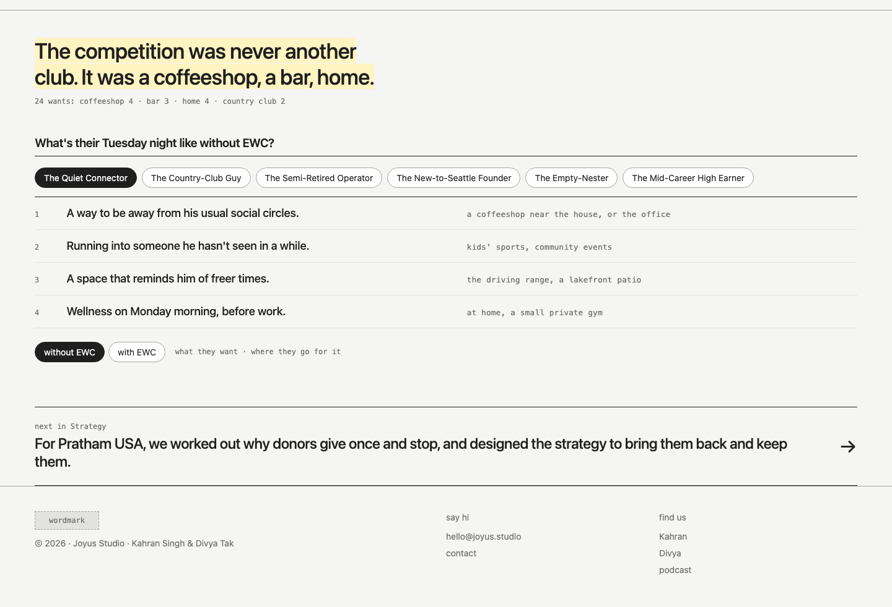
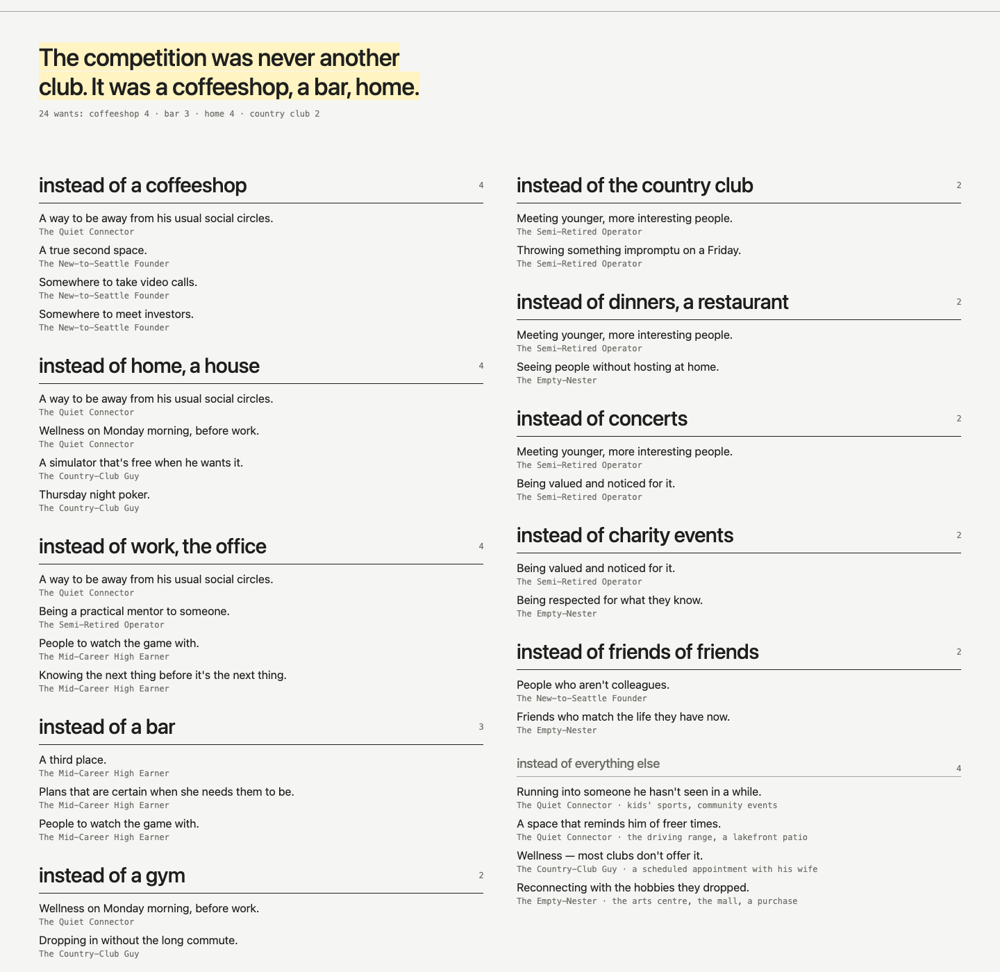
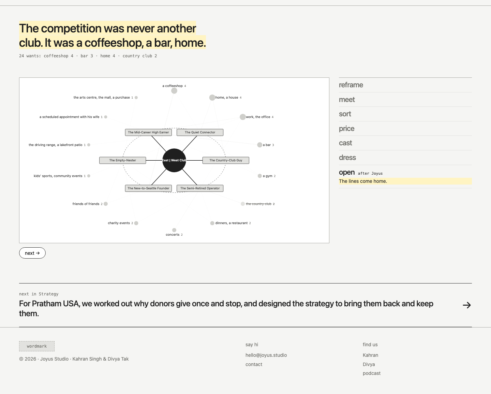
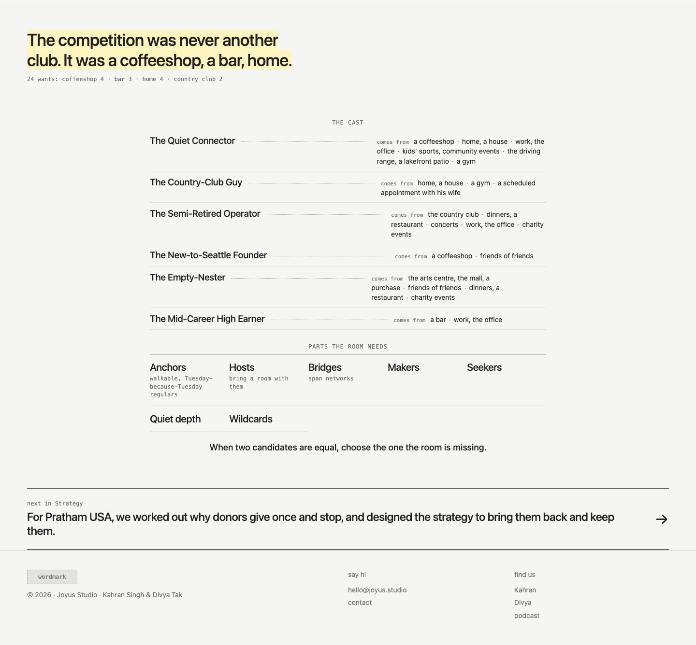
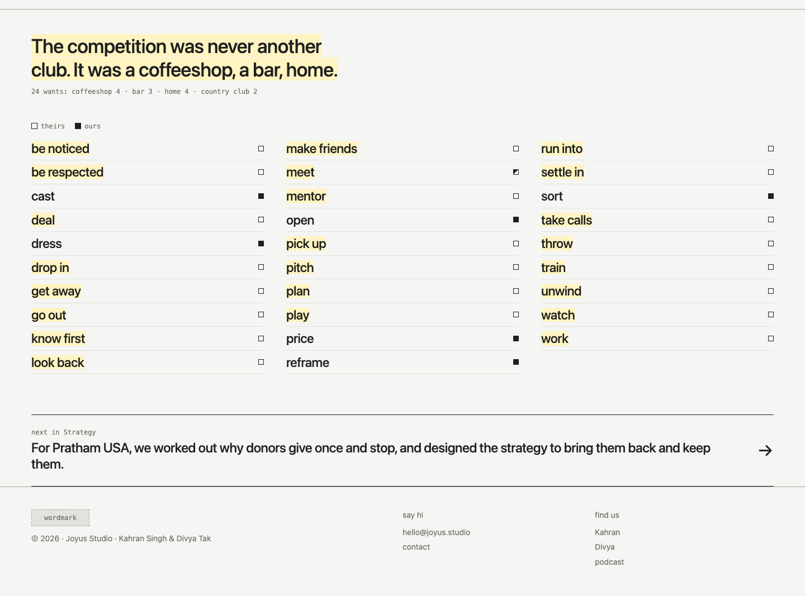

Study 45 · 27 October 2026 · Kahran
EWC, the web and the verbs as one idea
Study 44 put the web and the seven verbs side by side. This study fuses them instead. The web's idea is that people are defined by where they already go, and the competition is a coffeeshop, a bar, home. The verbs' idea is that the work is told as things done, in the club's own voice. Each page below is one idea that holds both. It still opens with the finding and keeps to 120 words of ours.
On 44: "none of these are combining the idea, the sentiment… combine the ideas of these both, not the exact implementation."
Kahran, 27 Oct




Next: Kahran picks, then the text pass. Every string on the five pages has a data-copy id. The full list, with each string's flag and source, is in copy.json. Yellow means draft. Change the words in words.json and run build.cjs.